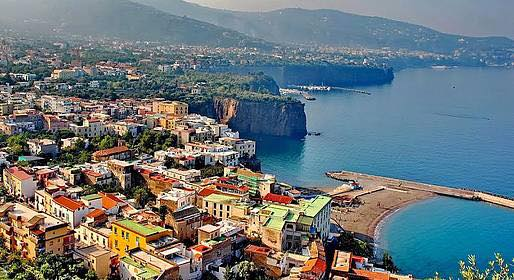
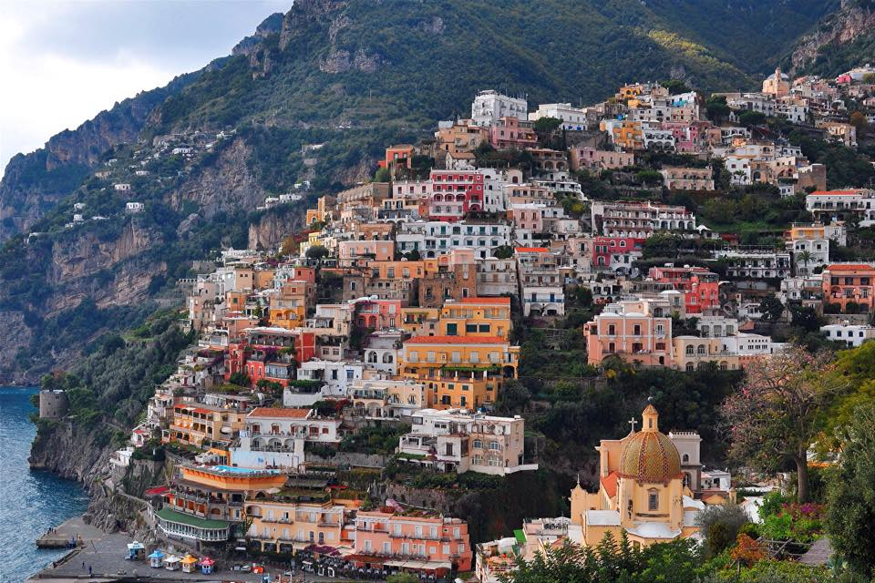
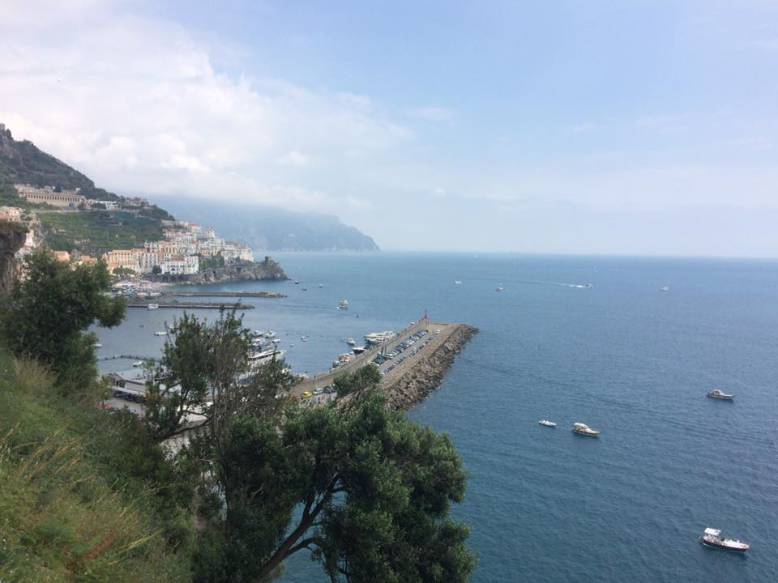
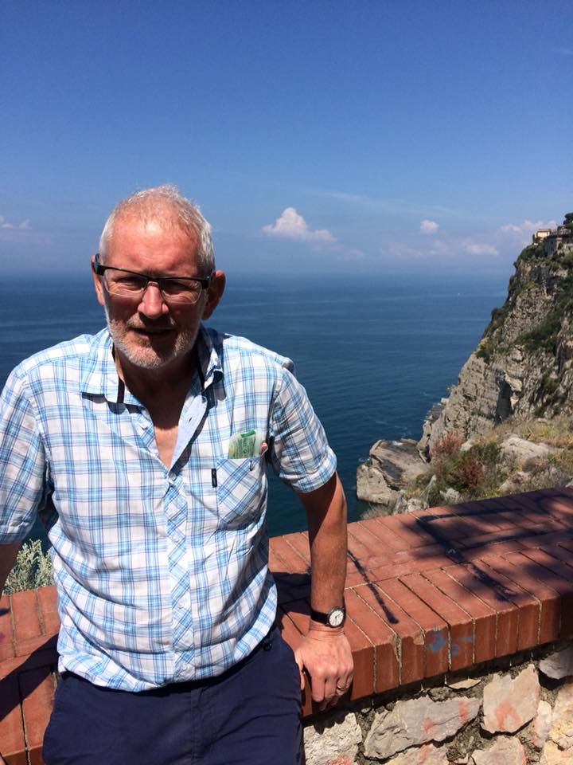
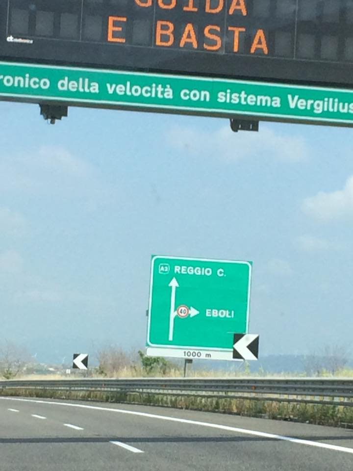

Well people told us the Amalfi Coast was amazing, but nothing quite prepared us for these fabulous sights of Sorrento, Positano and Amalfi. However they are all so crowded with tourists (and traffic - especially huge tour buses) which is killing the very beauty of what people come to see. A case of the Golden Goose methinks ...
And for my operatic friends, what a fatal gift ....A




